Jump to a section
33 · How to Determine Appropriate Color and Contrast
Refined 15 October 2026 from the supplied Joe Natoli course notes. Original wording and captures remain preserved.
Core principle
A grayscale check helps reveal whether hierarchy depends excessively on hue.
Application to game tools
Compare the original and grayscale tool, then inspect actual contrast pairs and test focus and status cues.
Assessment and qualification
Grayscale does not prove accessibility, simulate every color-vision deficiency, or measure WCAG ratios. Squinting is a separate coarse hierarchy check.
Try it
Do the target, warning and next action remain distinguishable?
Source: 33 How to Determine Appropriate Color and Contrast.md
Study detail and teaching translation
Temporarily remove hue to inspect light/dark relationships. Look for regions or states that become hard to distinguish.
Restore color and inspect actual text/background combinations. A successful grayscale view does not establish adequate text contrast or cover all color-vision differences.
Teaching adaptation: pair this check with the art squint test and a layout blockout. Each answers a different question; none replaces a person attempting the task.
Original captures
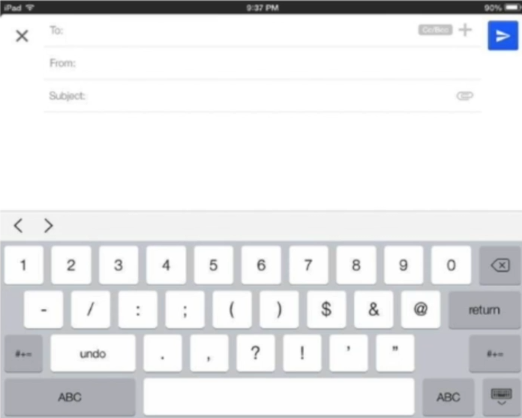
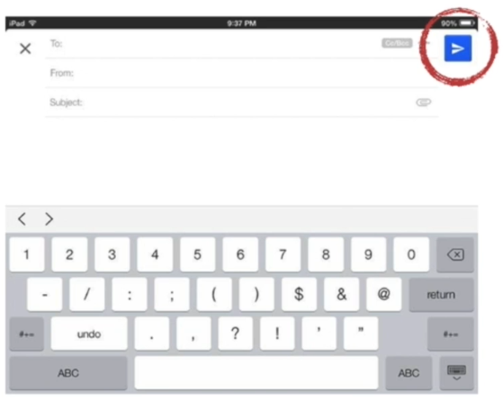
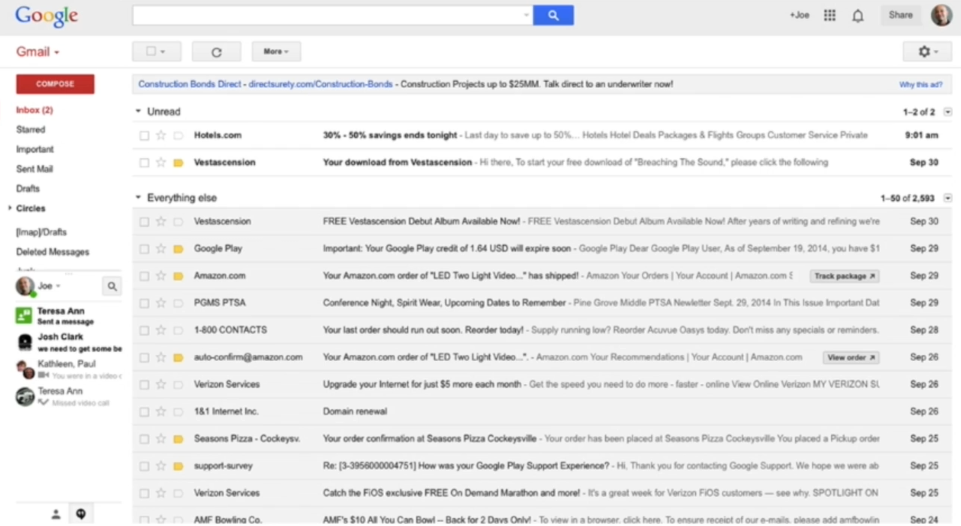
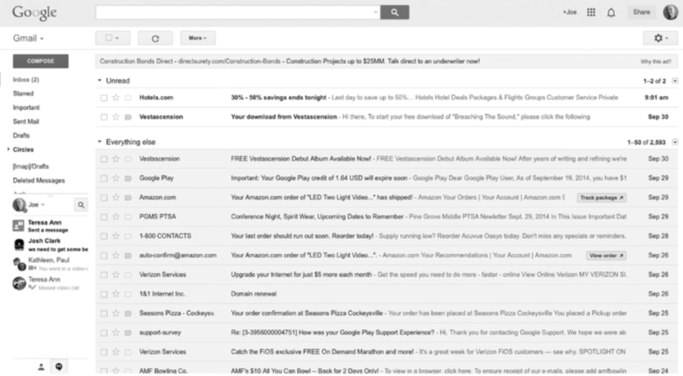
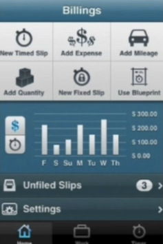
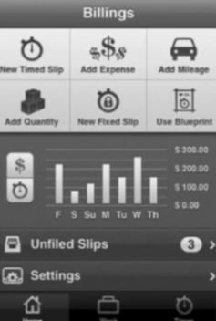
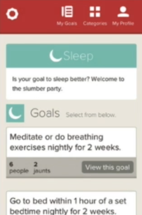
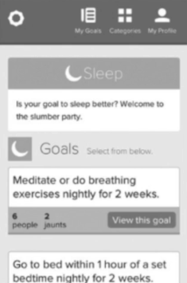
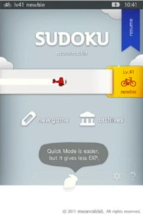
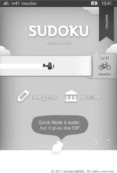
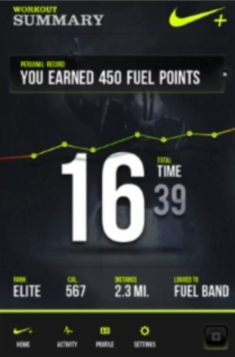
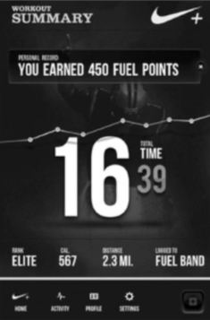